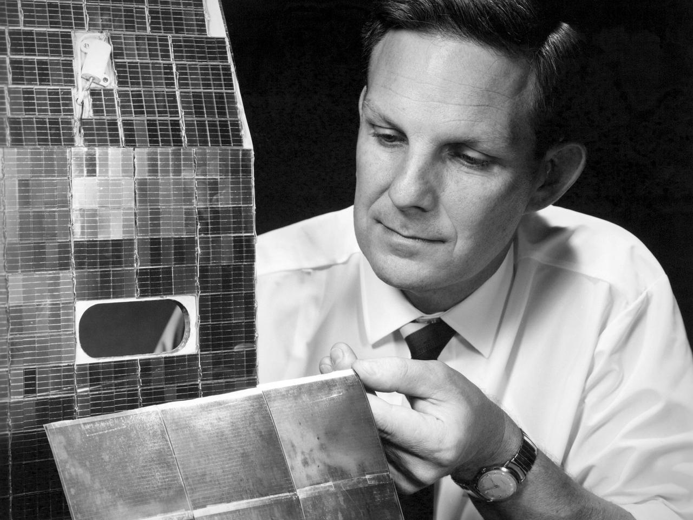
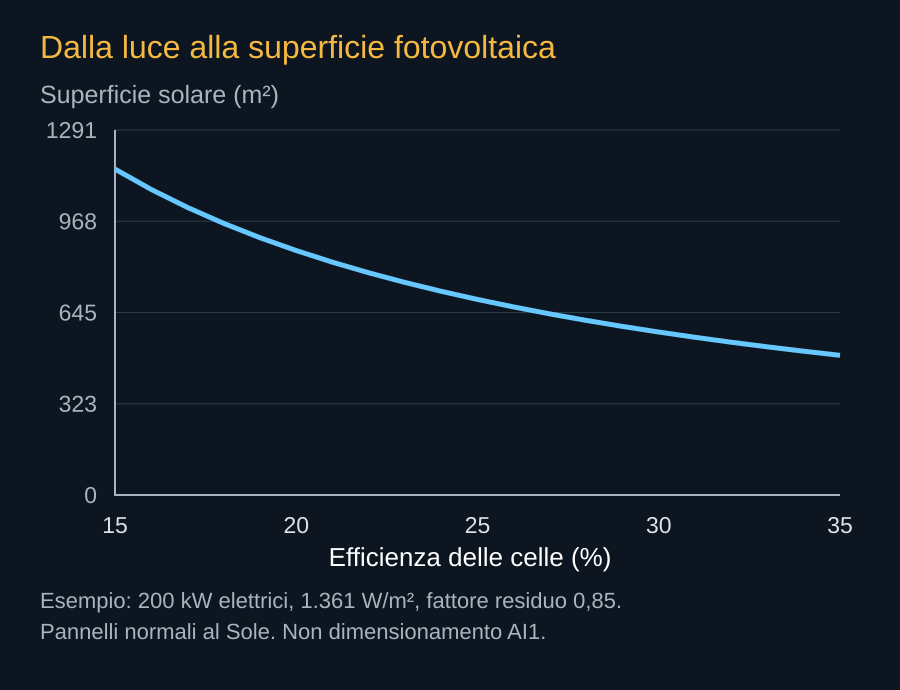
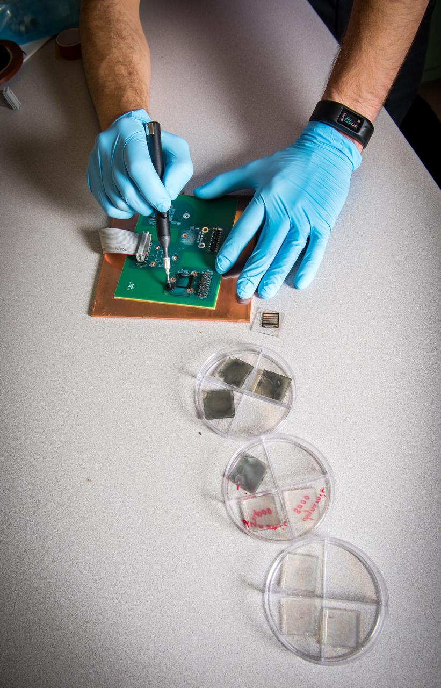

Il Sole offre energia, ma il satellite deve costruire il mezzo per raccoglierla. Una cella fotovoltaica trasforma soltanto una parte della radiazione incidente in elettricità. Il resto può essere riflesso, trasmesso o assorbito come calore. Cablaggi, conversione e distribuzione introducono altre perdite. La potenza utile del payload si trova alla fine di questa catena, dopo aver alimentato anche il resto del veicolo.


Una superficie da dimensionare
Vicino alla Terra il flusso solare medio è circa 1.361 watt per metro quadrato su una superficie perpendicolare ai raggi. Non è la potenza elettrica di un pannello. Per un esempio con celle al 30% e un fattore residuo di 0,85 che rappresenta altre perdite, la potenza elettrica risulterebbe di circa 347 W/m². Sono ipotesi didattiche, non caratteristiche delle celle AI1.
Per ottenere 200 kW in quelle condizioni servirebbero circa 576 m². Inclinazione, temperatura e invecchiamento possono aumentare il fabbisogno. Questa stima non verifica il limite di area riportato nella risposta FCC, perché il documento non fornisce tutti i dettagli del bilancio. Serve a capire che i pannelli sono una parte importante della struttura, non un accessorio disposto intorno al computer.


Inseguire la luce senza perdere il resto
L’orientamento migliore per raccogliere energia può non essere quello migliore per il radiatore o per un terminale ottico. Si possono usare parti mobili e diverse geometrie, ma ogni grado di libertà aggiunge meccanismi, cablaggi e condizioni da controllare. Il satellite deve mantenere un equilibrio fra funzioni che desiderano guardare in direzioni differenti.
I pannelli molto grandi introducono anche deformazioni e vibrazioni. Il movimento di una superficie può disturbare il puntamento di un laser, mentre una manovra del veicolo può modificare l’illuminazione. L’alimentazione non va valutata soltanto in uno stato statico favorevole, ma durante transizioni e operazioni normali.


Le batterie e il prezzo delle ombre
Un accumulatore può coprire un’eclissi, una transizione o un picco. Deve però essere caricato, mantenuto entro limiti termici e dimensionato per la vita richiesta. Per un carico ipotetico di 200 kW, mezz’ora senza produzione chiede 100 kWh consegnati. Se si consentisse di usare l’80% dell’energia nominale, occorrerebbero almeno 125 kWh nominali prima di altri margini e perdite.
L’esempio mostra perché un’orbita molto illuminata è interessante. Ridurre l’accumulo può ridurre massa e complessità. Non permette comunque di eliminarne la discussione: il veicolo deve superare condizioni anomale, tempi di acquisizione dei collegamenti e possibili limitazioni della produzione. La risposta può comprendere batterie, riduzione del carico o entrambe.
Potenza a fine vita
Le celle e gli apparati cambiano con il tempo. Un satellite non dovrebbe essere dimensionato assumendo che la potenza del primo giorno rimanga disponibile indefinitamente. Il requisito commerciale va legato alla potenza utilizzabile durante la vita prevista, quando degrado e guasti hanno già consumato una parte del margine.
La gestione del carico informatico può aiutare: assegnare attività compatibili con l’energia del momento, limitare punte o spostare lavoro. Ma una rete che vende capacità deve dire quanta ne può garantire. L’energia abbondante al di fuori dell’atmosfera diventa un vantaggio soltanto quando pannelli, orbite e software riescono a convertirla in servizio continuativo.
Fonti pubbliche e tracce
- NASA, stato dell’arte: alimentazione elettrica. Pannelli, accumulo e distribuzione. Non contiene una certificazione dei componenti AI1.
- NASA Earth Observatory, catalogo delle orbite. Principi di quota, inclinazione e orbite eliosincrone. Gli esempi quantitativi del libro sono calcoli didattici originali.
- SpaceX, Starmind e scheda AI1. Consultata il 10 ottobre 2026. Fonte aziendale per la scheda corrente e gli obiettivi Gigasat; non rapporto di prove in volo.
- SpaceX, risposta alla FCC datata 16 settembre 2026. Documento primario scaricato e letto. Incontro del 14 settembre; inviluppi a pagina 8, rientro a pagina 9. Dichiarazioni e modelli del richiedente, non decisione della FCC.